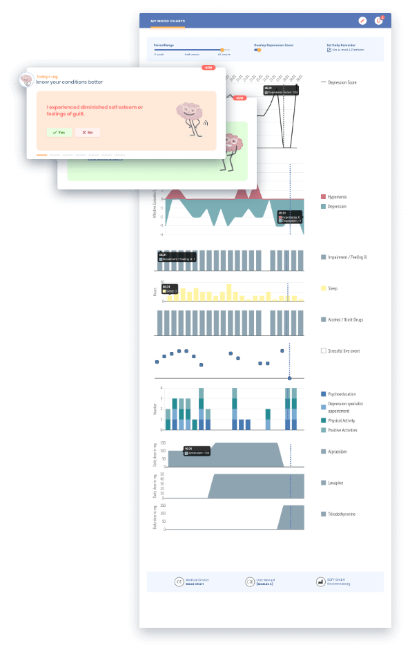

Affektive Erkrankungen zeichnen sich durch eine hohe Anfälligkeit für schwankende Symptome und durch ihren zeitlichen Verlauf aus. Eine Symptomtabelle kann anzeigen, ob Sie mit einer depressiven Stimmung, sogenannten "Blips" oder einer echten depressiven Episode zu tun haben oder nicht. Individuelle affective Symptome werden täglich vom Patienten dokumentiert und ein Gesamtwert wird dargestellt.
Ihre Vorteile bei der Verwendung unsers edupression.com Stimmungsdiagramms:
Durch die visuelle Darstellung von affektiven Episoden und Stimmungen sowie krankheitsrelevanten Faktoren wie Medikamentenveränderungen, Lebensereignissen, Psychotherapie und positiven Aktivitäten können Sie den Zusammenhang zwischen Symptomen und auslösenden Umweltfaktoren oder therapeutischen Wirkungen erkennen.
Indem Sie kontinuierlich affektive Symptome aufzeichnen, werden Sie und Ihr Behandlungsspezialist auf mögliche Veränderungen im Krankheitsverlauf sensibilisiert. Das ermöglicht eine frühzeitige Erkennung und damit einen schnellen therapeutischen Eingriff.
Da Sie Ihrem Arzt oder Psychotherapeuten Ihr individuelles Stimmungsbild mitteilen, erhalten diese einen umfassenden Überblick über die Krankheit, da Sie auch einen besseren Überblick über die Entwicklung der Symptome zwischen den Therapiesitzungen erhalten. Auf dieser Grundlage können Sie und Ihr Depressionsspezialist wichtige diagnostische und therapeutische Entscheidungen treffen.

Das von unserem medizinischen Team entwickelte Edupression.com®-Stimmungsdiagramm besteht aus 6 Kategorien, die die Stimmung des Patienten und wichtige Einflussfaktoren erfassen.
Erfasst die Summe von 12 der wichtigsten Depressionssymptome einschließlich der Restsymptome, die sogenannten Residualsymptome, die wichtige Indikatoren für Rückfälle sind. Für unipolare Depression entwickelt ist das ein äußerst empfindliches Instrument zur Aufzeichnung Ihrer Depressionsstärke.
Notieren Sie die Polarität und den Schweregrad Ihrer affektiven Episoden.
Dokumentieren Sie, ob Sie sich beeinträchtigt / krank fühlen.
Halten Sie in Ihrem edupression.com®-Stimmungsdiagramm Ihre Schlafstunden, den weiblichen Zyklus, den Konsum von Drogen und Alkohol sowie stressreiche Lebensereignisse fest.
Hier zeichnen Sie die mit Psychoedukation verbrachte Zeit, Kontakte mit Ihrem Behandler, Sport und die für die Krankheit positiven Aktivitäten auf.
Dokumentieren Sie, welche Substanzen Sie in welcher Menge einnehmen.
Wir bei edupression.com wollen einen Platz für depressive Menschen schaffen, an dem sie sich in guten Händen fühlen - vereint im Kampf gegen die Depression.
Gratis Depressionstest machen Preisliste zeigen